Work
Projects
Click on a project to learn more.
An Electric Cooling Device — for Humans
A targeted cooling device applying cold to the palms — one of the body's most effective heat-exchange surfaces — delivering measurable reductions in core body temperature.
Custom Temperature Monitoring System
A non-invasive tympanic temperature logger for field biologists, eliminating invasive methods and parasitic heat loss with accurate, portable DAQ-stored readings.
Blue Whale Biologging
Designed improved biologging tags for scientists at Monterey's Hopkins Marine Station to collect long-duration data on blue whale speed, depth, and migration — non-invasive and cost-effective.
Shrimphony: Acoustic Biomonitoring in Australia
An acoustic biomonitoring system using snapping shrimp sounds to assess reef health — deployed in Quandamooka, Australia, with data visualized via spectrogram analysis.
Hot or Cold: A Video Game with Real Temperature Feedback
A maze game where players hunt for a ghost using haptic temperature feedback on the mouse — replacing visual cues with physical sensation.
The Chef 300: An Obstacle Racing Robot
A robot built to complete a full obstacle course — highlights include launching ping pong balls and autonomously moving a pot between stations.
The Useless Box
A self-closing box that shuts itself the moment it's opened. Every electrical component fits precisely inside. Built to learn feedback loop programming.
Metal Rose
A sculptural rose crafted entirely from sheet metal as a one-of-a-kind Mother's Day gift — a personal project and introduction to sheet metal fabrication processes.
A Pour Over Machine — Just Add Water!
A compact, fully disassemblable pour-over coffee maker machined from food-grade aluminum — designed for dorm life, built via milling, lathe, and tapping.
A Fancy Brass Bell
A precision-crafted brass bell made using casting, sand blasting, milling, and tapping — a showcase of multi-process traditional machining.
Sustainable Aviation Fuel Platform
A book-and-claim web platform solving the SAF supply gap — letting users purchase sustainable aviation fuel credits for private flights. Already used by a Stanford professor.
DAQ for Cryo Compressed Hydrogen Testing
Built during a summer internship at a hydrogen storage company, this web-based DAQ platform collects, stores, and visualizes real-time data from cryo-compressed hydrogen tests at Lawrence Livermore National Laboratory.
Biology √ó MechE
An Electric Cooling Device — for Humans
This device targets the palms of the hands, one of the body's most effective heat-exchange surfaces. By applying targeted cold to this area, the system delivers enough cooling to measurably reduce core body temperature by 1.2°C.
The design integrates a thermoelectric cooling element with a custom-fit palm interface, making it practical for athletic recovery, heat stress mitigation, and field use.
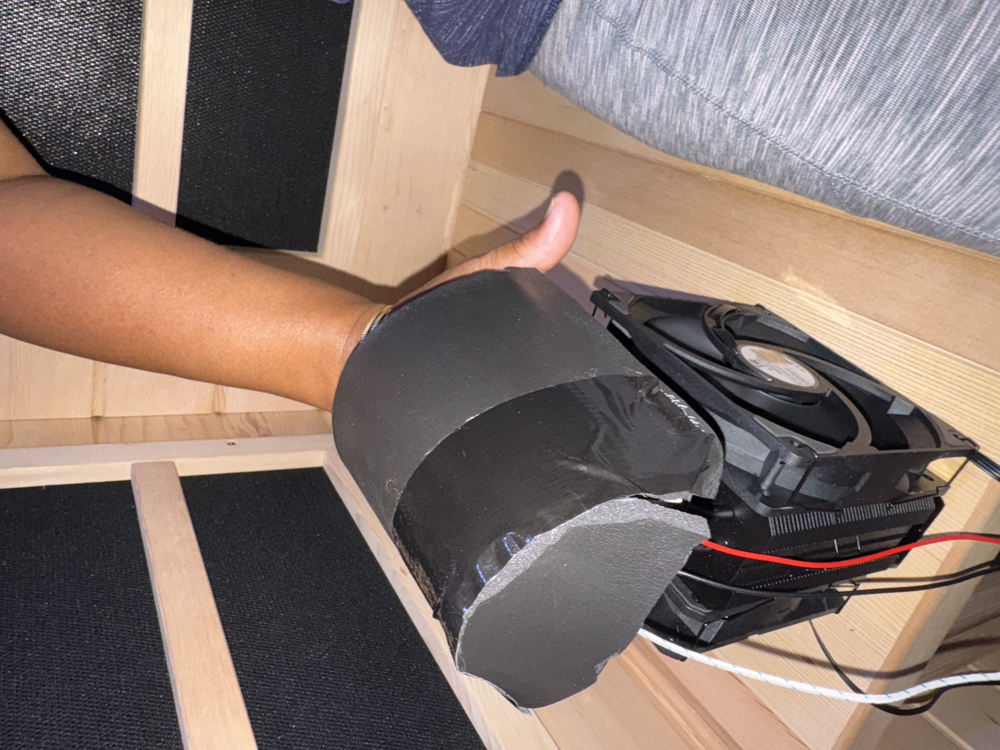
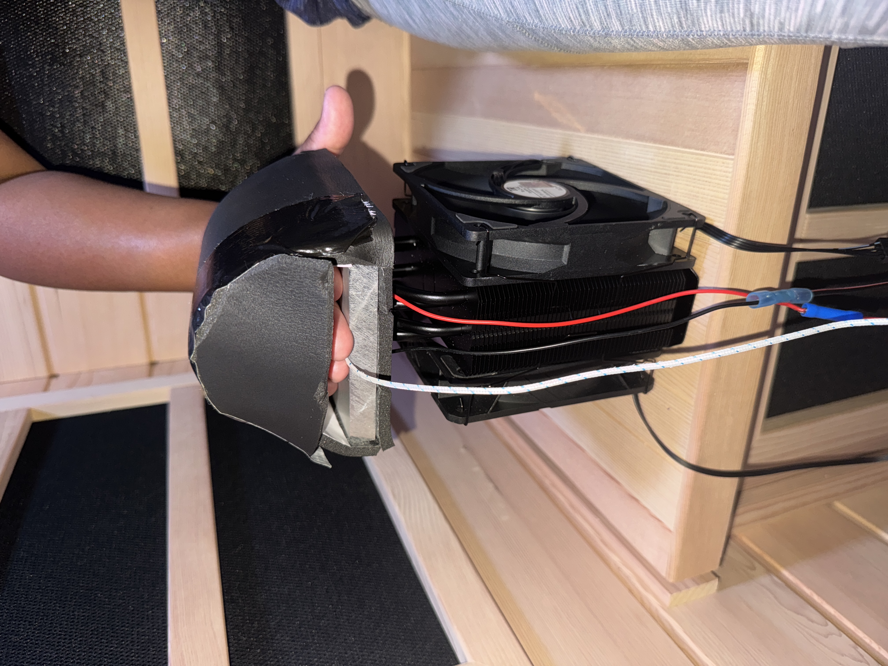
click to enlarge
Biology √ó MechE
Custom Temperature Monitoring System
A non-invasive tympanic temperature logger designed for field biologists tired of invasive measurement methods (rectal and esophageal). The system eliminates parasitic heat loss to deliver accurate readings, stored directly to a portable DAQ unit.
Built for real-world deployment in challenging field conditions where reliability and ease of use are critical.
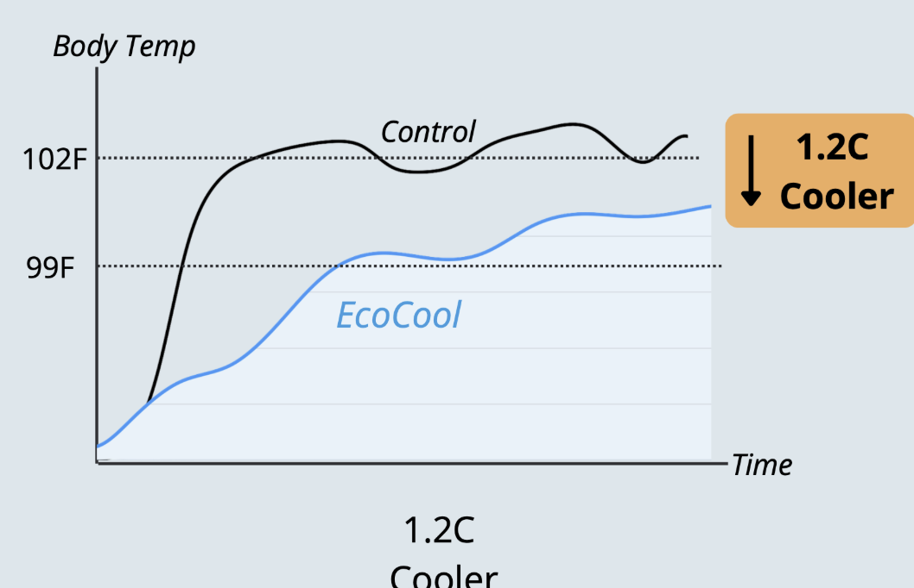
click to enlarge
Biology √ó MechE
Blue Whale Biologging
Designed improved biologging tags for scientists at Hopkins Marine Station, Monterey, enabling collection of long-duration data on blue whale speed, depth, and migration patterns.
The device was tested in flow tanks and validated via CFD simulations in Fusion 360. An inverted wing modification proved most beneficial in reducing acceleration noise and stabilizing the tag. The design is non-invasive and significantly cheaper than existing solutions.

click to enlarge
Biology √ó MechE
Shrimphony: Acoustic Biomonitoring
Developed an acoustic biomonitoring system that uses snapping shrimp sounds to assess reef health. An acoustically complex (ACI) habitat indicates a healthy and biodiverse ecosystem.
The system was successfully deployed in Quandamooka, Australia, with data visualized as spectrograms to detect amplitude peaks and characterize reef health over time.
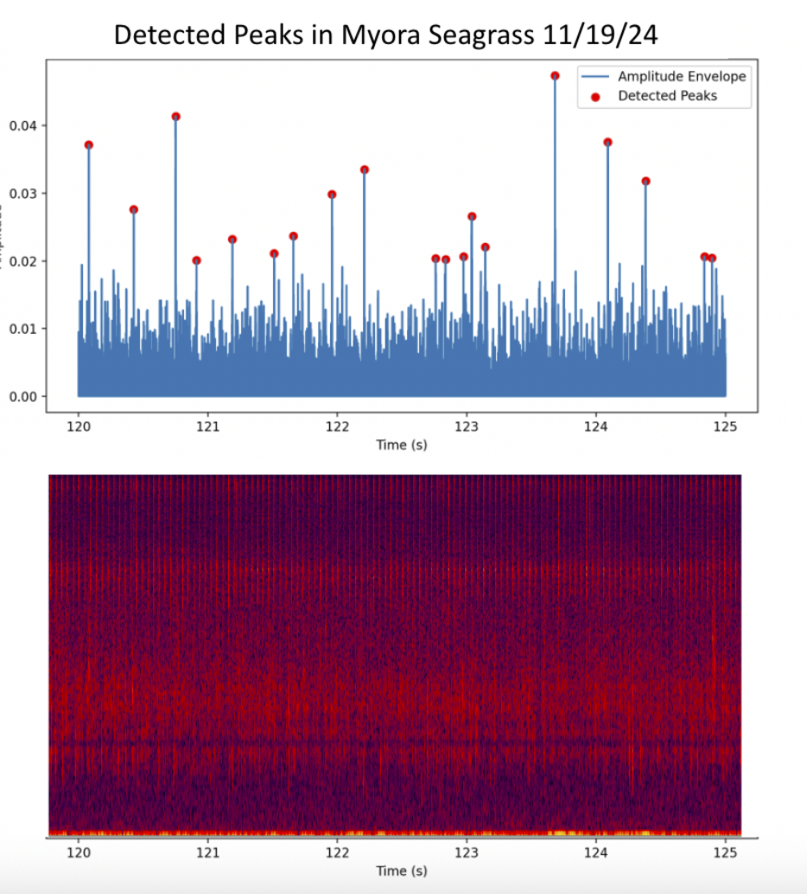
click to enlarge
Robots
Hot or Cold: Temperature Feedback Game
Designed a video game that replaces visual proximity cues with haptic temperature feedback. Players navigate a maze to hunt for a ghost — guided entirely by warmth and cold sensed through a custom-built mouse interface.
The project involved integrating thermoelectric elements with real-time game state, creating a novel interaction paradigm that bridges the digital and physical.
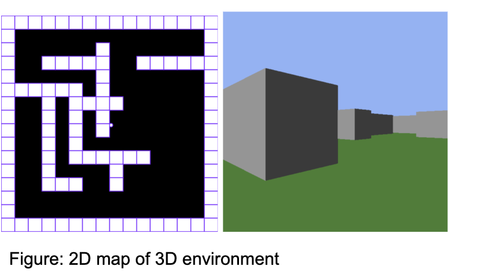

click to enlarge
Robots
The Chef 300: Obstacle Racing Robot
Built a fully functional robot capable of navigating and completing a timed obstacle course. Key achievements include a ping pong ball launcher and a mechanism to transport a pot between designated stations.
Designed and fabricated as part of a team competition, requiring rapid iteration on both mechanical and electrical systems under time constraints.
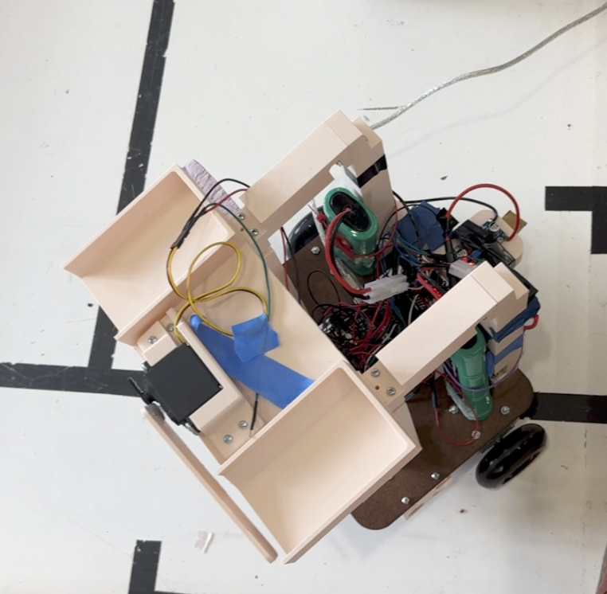
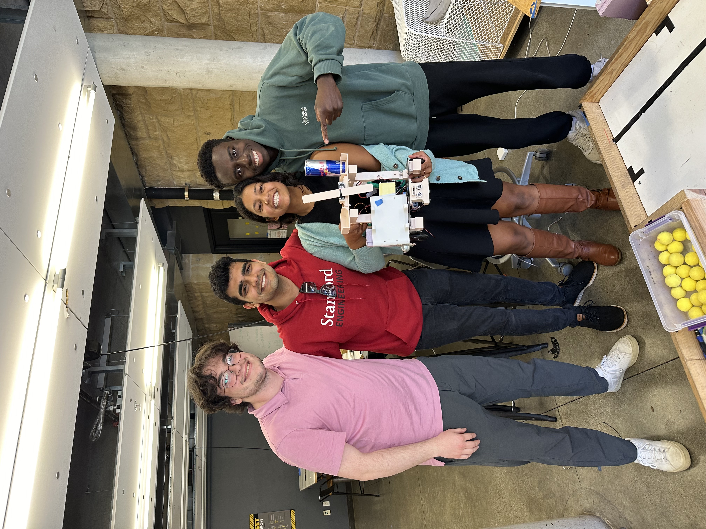
click to enlarge
Robots
The Useless Box
A self-closing box that shuts itself the moment it is opened. The elegant constraint: the only items that fit inside the box are all of the required electrical components.
Built as a hands-on exercise in feedback loop programming, the project reinforced core control systems concepts in a tangible and playful format.
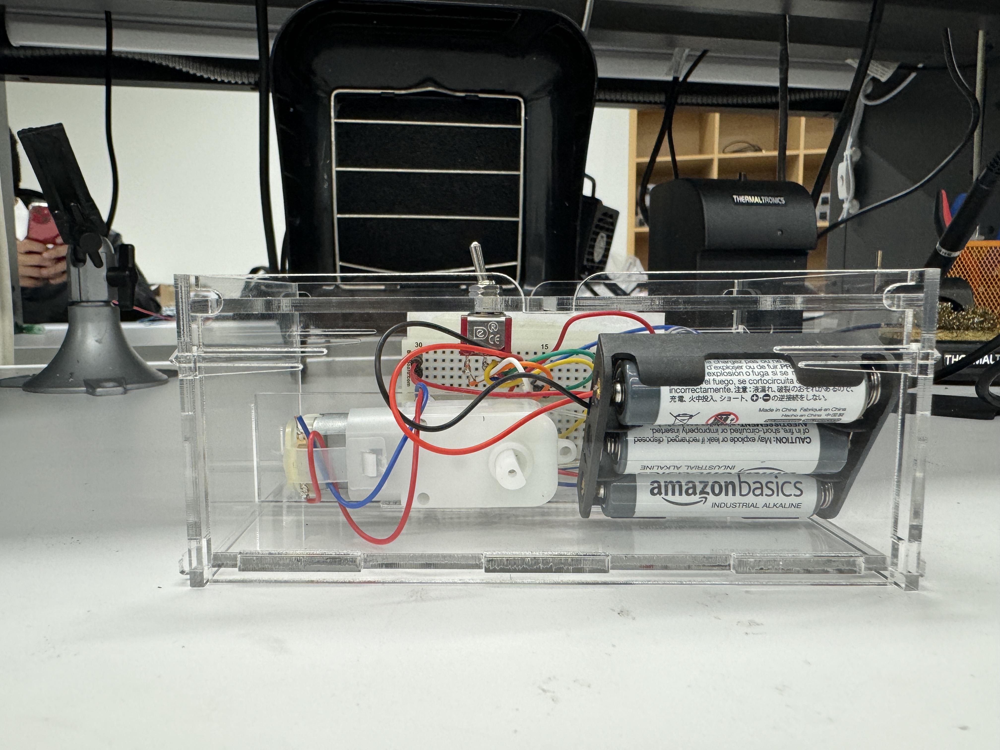
click to enlarge
Mechanical Design
Metal Rose
A sculptural rose crafted entirely from sheet metal as a one-of-a-kind Mother's Day gift. The inspiration: my mother dislikes maintaining flowers — watering them, pruning them. So I made her one that would last forever.
This project was an introduction to sheet metal fabrication processes, including cutting, forming, and joining thin-gauge metal into delicate organic shapes.
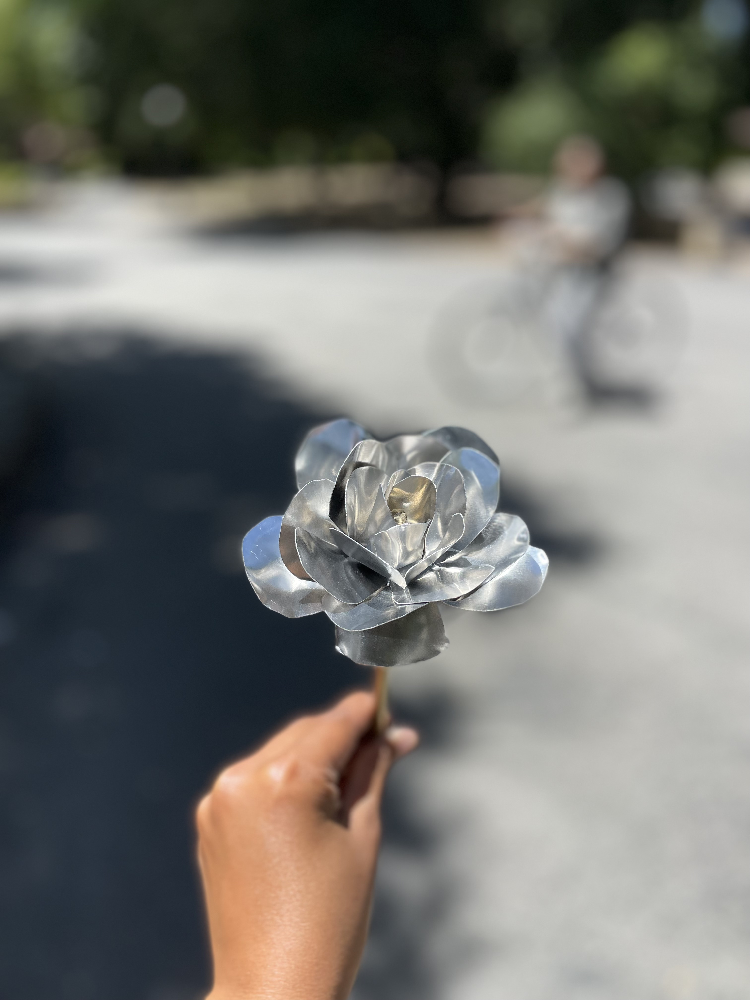
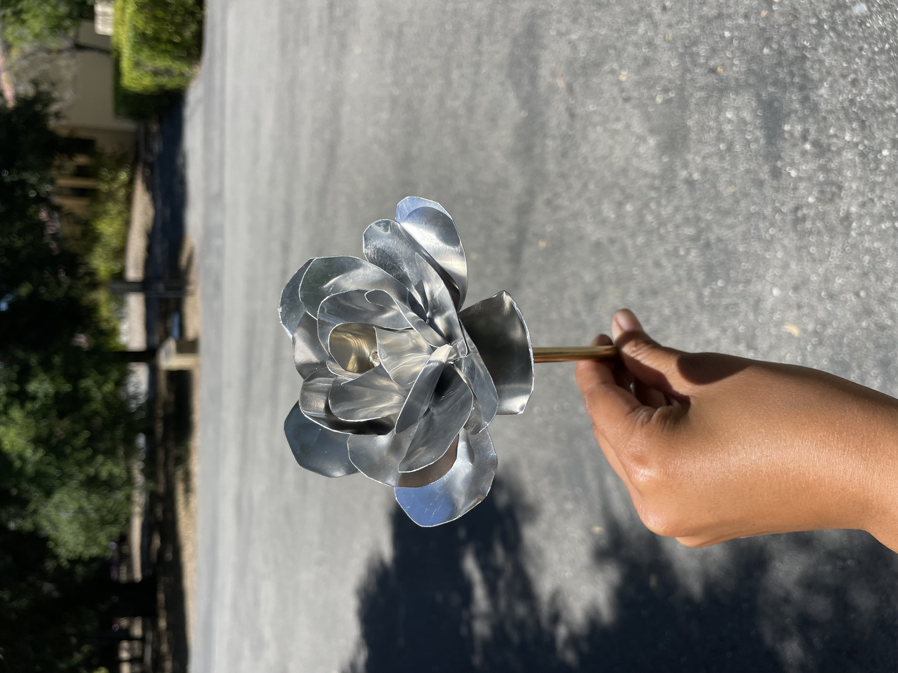
click to enlarge
Mechanical Design
A Pour Over Machine — Just Add Water!
A compact, fully disassemblable pour-over coffee maker machined from food-grade aluminum. Designed specifically for dorm life — where space is at a premium and annual moves are a reality.
Built using milling, lathe, and tapping processes, with tight tolerances on mating surfaces for a leak-free assembly and clean aesthetic.
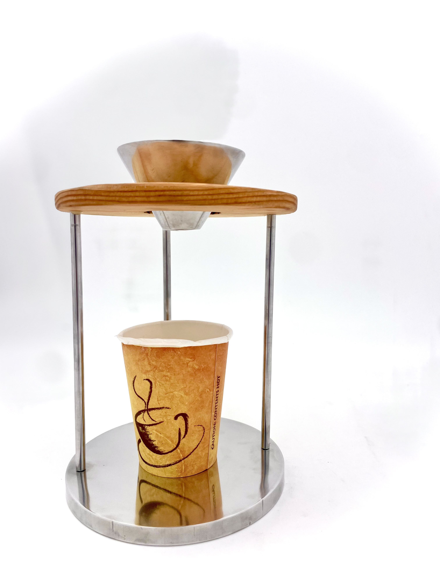
click to enlarge
Mechanical Design
A Fancy Brass Bell
A precision-crafted brass bell created through a full multi-process workflow: casting, sand blasting, milling, and tapping. Each step required careful attention to material behavior and dimensional tolerances unique to brass.
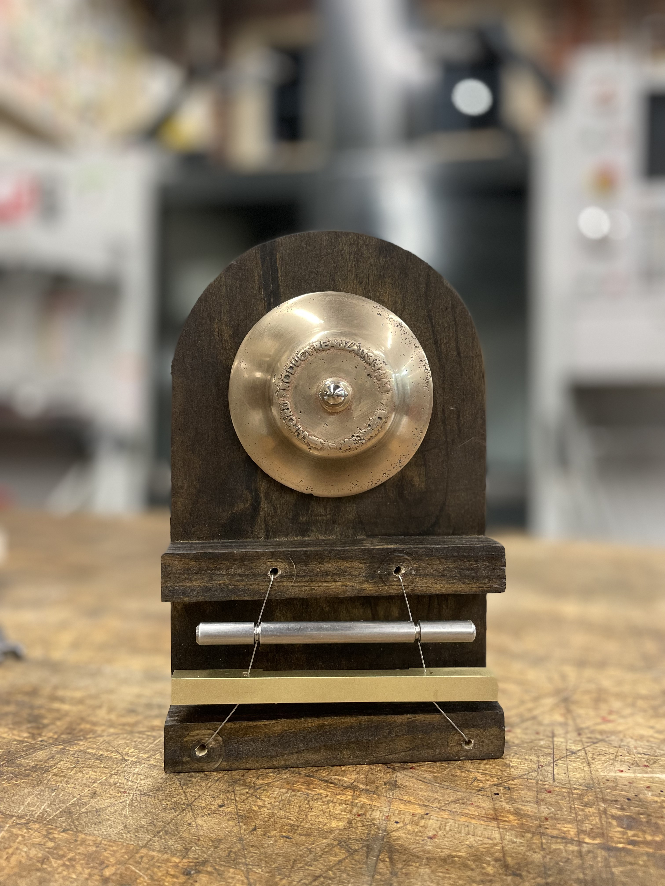
click to enlarge
Digital
Sustainable Aviation Fuel Platform
Problem: Demand for sustainable aviation fuel (SAF) exceeds supply, making it difficult for private flyers to access green aviation options.
Solution: A book-and-claim web platform that allows users to purchase SAF credits for private flights, decoupling physical fuel delivery from environmental credit — enabling broader SAF adoption. Already used by a Stanford professor.
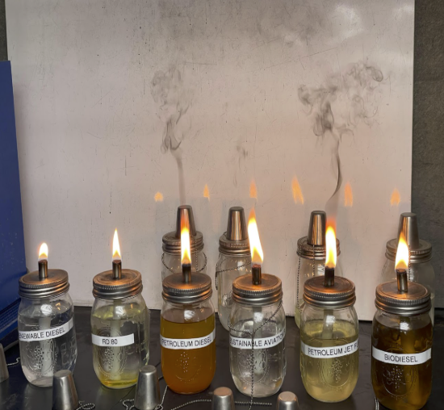

click to enlarge
Digital
DAQ for Cryo Compressed Hydrogen Testing
Built during a summer internship at a hydrogen storage company, this web-based data acquisition platform collects, stores, and visualizes real-time experiment data from cryo-compressed hydrogen tests run at Lawrence Livermore National Laboratory.
Accessible by any team member from anywhere, the platform enables remote monitoring of ongoing experiments and reduces the need for on-site presence during data collection runs.